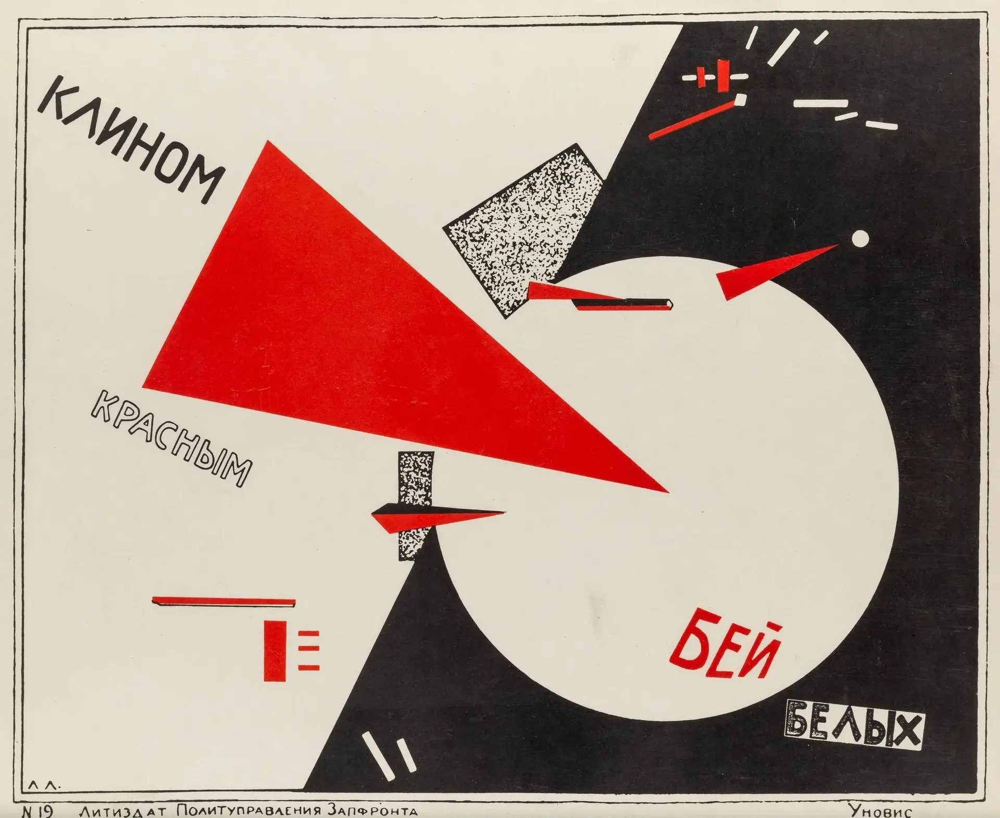

КЛИН
КЛИНОМ КРАСНЫМ
БЕЙ БЕЛЫХ
用红色楔子打击白军

红三角是共产党，白圆是资产阶级。照片与几何在这里不是装饰—— 它们是论证本身。楔子的方向就是整张画面的动势来源。
ОРГАН ЛЕВОГО ФРОНТА ИСКУССТВ
ЦЕНА 5 КОП.
ВМЕСТО ПРЕДИСЛОВИЯ
报纸是构成主义最早的战场。1919 年，罗德琴科与马雅可夫斯基在俄罗斯电讯社的橱窗里， 把标语和几何形并置；1923 年，《ЛЕФ》杂志发表宣言： «Материальное оформление объекта должно заменить его эстетическую комбинацию» —— 材料的成形要取代审美的组合。下面三版是三张海报，点击任意一版进入。
КЛИН
用红色楔子打击白军

红三角是共产党，白圆是资产阶级。照片与几何在这里不是装饰—— 它们是论证本身。楔子的方向就是整张画面的动势来源。
КНИГИ
书籍！在一切知识分支中
罗德琴科 1924 年为列宁格勒国家出版社做的广告海报。一张女性侧脸照片， 加上一个吃掉半个画面的词。照片是材料，文字也是材料，两者被拼接而不是排版。
БАШНЯ
第三国际纪念塔
塔特林 1919 年的方案：一根斜向主梁上挂着三个旋转的玻璃体—— 圆柱一年转一圈，圆锥一月一圈，小圆柱每日一圈。若建成将达 400 米，高于埃菲尔铁塔。 它从未被建造，却成了整个运动最著名的符号。
ПРОЛЕТАРИИ ВСЕХ СТРАН
№ 01 / 1919
用红色楔子打击白军 · 李西茨基
点击下方文章条阅读 · ESC 退回报纸
СУПРЕМАТИЗМ · 1919
红三角（共产党）刺入白圆（资产阶级）。红、白、黑三色加上基本几何形， 是李西茨基至上主义时期的招牌手法；而文字被用来引导观者跟随那个主导向量的轨迹—— 红三角像一根针，扎破一只气球。
动作在画面里被重复：更小的几何形以同样的方向贯穿全图。 整张海报没有一处是"构图上的平衡"，它是被一条斜轴拉着的。
在这张海报里，我们看到的不仅是一件现代平面设计的杰作，也是至上主义视觉语言的 一次新应用：把原本指向精神超越的语言，转变成传达物质世界具体观念与信息的实用语言。 — 查尔斯·克莱默 & 金·格兰特，艺术史学者
李西茨基当时在马列维奇主持的维捷布斯克 UNOVIS 工作室。 这套语言后来被证明可以承载具体信息——这正是"海报"与"绘画"的分岔点。
ВО ВСЕХ ОТРАСЛЯХ ЗНАНИЯ
书籍！在一切知识分支中
№ 02 / 1924
罗德琴科 · 列宁格勒国家出版社广告海报
点击下方文章条阅读 · ESC 退回报纸
ФОТОМОНТАЖ · 1924
这张为列宁格勒国家出版社做的广告海报，构图是他 1920 年代中期照片拼贴的典型： 照片与文字的拼接，而不是让文字去"配合"图片。
罗德琴科 1921 年放弃架上绘画，转而把自己当作工程师。同年起他与诗人马雅可夫斯基 合作了一系列广告——那批作品第一次把现代设计带进俄国广告业， 同时也在卖商品的同时卖革命的价值。
用几何构图与"响亮"的色彩去宣告现代性：这是他的原话所指向的东西。 一个词占掉半个画面，在今天看来仍然冒犯版式教科书。
本页右侧的档案图版经过双色调 + 半调网点处理—— 对应当时只能套两三种油墨的印刷条件。照片在这里是被"加工过的材料"， 不是插图。
№ 03 / 1919–20
第三国际纪念塔 · 塔特林
点击下方文章条阅读 · ESC 退回报纸
ПРОЕКТ · 1919–1920
1917 年，塔特林开始构想一座纪念社会主义革命的巨型结构；到 1920 年， 他拿出了"塔特林塔"的完整方案。原始模型是一具 15 英尺高的木构， 从未进入实际建造。
按设计，它将是 400 米高的螺旋钢结构——比埃菲尔铁塔还要高三分之一。 斜向的主梁锚定整座塔，梁上挂着三个旋转的玻璃体：
塔顶是一个每小时转一次的半球，内含无线电台，向云层投射布尔什维克标语。
它成为共产主义乌托邦的象征，也是构成主义运动最著名的标志—— 尽管没有一根钢梁真的被立起来。